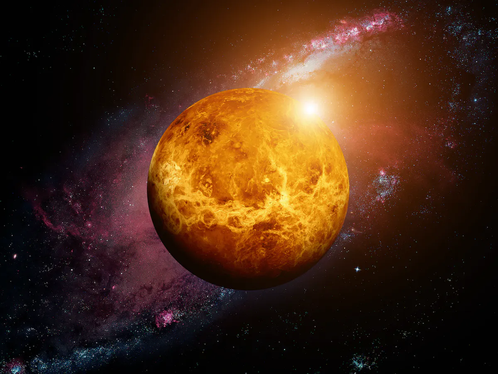

Venus
Welcome to planet Venus! It is the second planet from the sun. This being stated, it is a hot world with a very thick atmosphere. Venus' atmosphere is toxic to humans due to being primarily comprised of carbon dioxide. Its upper atmoshpere is home to thick yellow clouds comprised of sulfuric acid. These thick clouds trap heat from the sun's rays and in turn cause an enhanced greenhouse effect within the planet's atmosphere. Venus is the hottest planet in the entire solar system, even though it is the second planet from the sun, in large part due to the greenhouse effect. Surface temperatures can reach up to 900 degrees Fahrenheit! If you want to learn more about venus, visit Nasa's website for further information.
